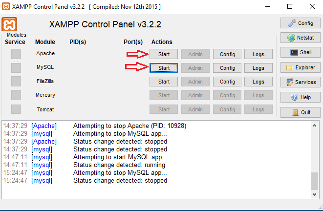
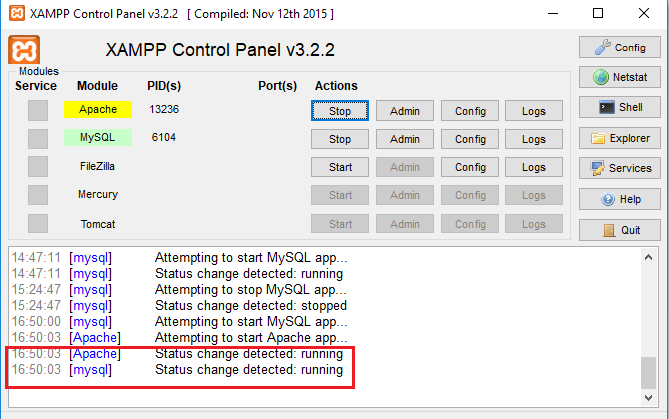

Unable to connect to any of the specified MySQL hosts.
Este error ocure porque el programa de ClaryLegales punto de ventas no ha podido establecer una conexion a la base de datos
causas/solucion
1. Encienda la pc principal, si ya esta encendia es posible que el problema se de xampp para solucionar eso pasa al siguiente punto
1. Verifica que el programa de xampp esta iniciado, sino lo esta ve a inicio y en el buscador escribe xampp has clic en el que dice XAMPP Control Panel
2. Ejecuta el sevicio de apache y MySQL
3. Luego de que se haya activado saldra un mensaje en la parte de abajo diciendo:
[Apache] Status change detected: running
[mysql] Status change detected: running
En el caso que no inice o muestre algun error intente reinstalar el programa. ¡Cuidado! recuerde hacer una copia de la Base de datos antes de reinstalar para evitar perdida de la informacion.
Cual quier cambio a la base de datos tiene que ser realizado por un Tecnico autorizado